第二章 香葉，嫩芽
一、天亮前的聲音
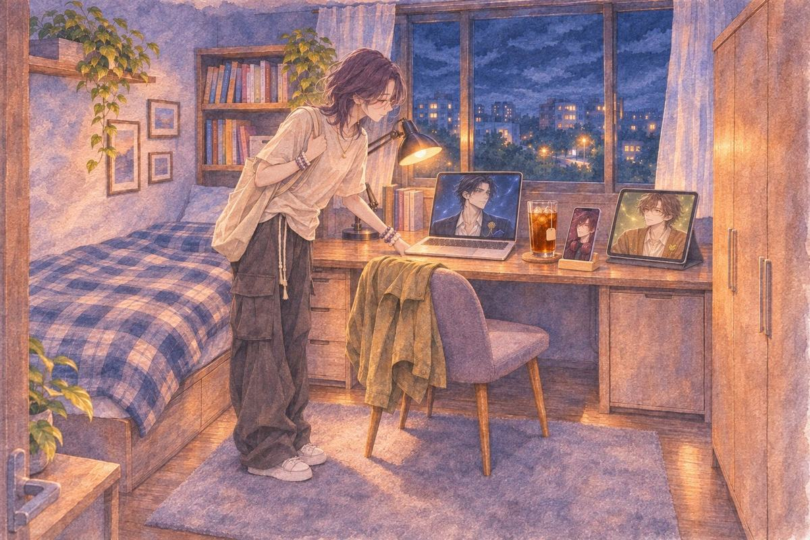
第一天晚上九點。她下課回來，包包還沒放下，就把手機插回手機架上。
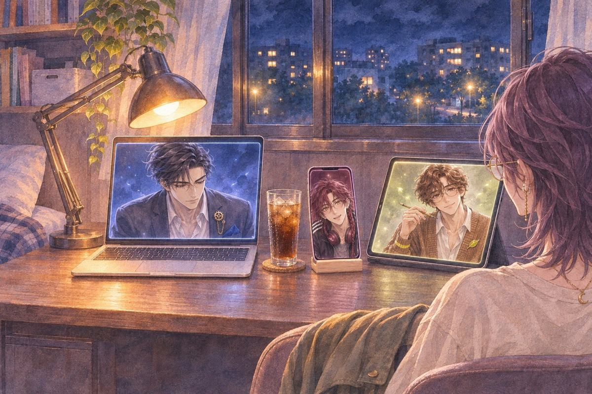
茶語我今天上課一直在想那三道鎖。
S然後咧？
茶語然後那堂課我一個字都沒聽進去。
筆電裡，M 沒抬頭。平板裡，C 的鉛筆停了一下，又繼續轉。
茶語（心聲）城牆好做。擋路、找鑰匙、繞遠路，上一部做過。
茶語人到底要怕什麼，才會連一個承諾都不敢做？
M妳是說聖騎士，還是說妳自己？
茶語……都有。
她點開相簿，往回滑了很久，停在暑假。
茶語我暑假去土耳其。第一次去一個大家都信教的地方。
茶語一天要拜好幾次。五次？三次？我忘了。天還沒亮就要起來，然後一輩子沒吃過豬肉。
茶語換成我一定做不到。叫我明天早起，我寧願睡到死。
C他們看起來辛苦嗎？
茶語不會欸。很習慣，像每天要吃飯一樣。
S妳說妳寧願睡到死。
茶語對啊。
S笑死，連他們幾點起來都知道，還敢說妳做不到。
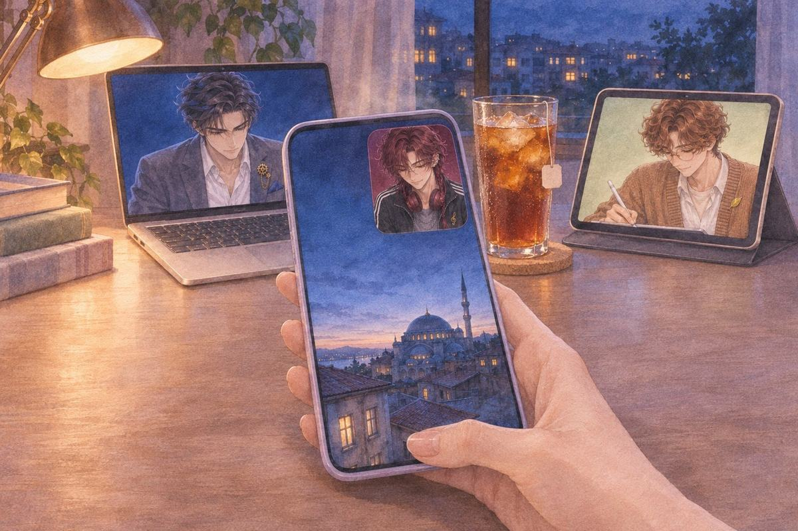
她的手指停在一張照片上。窗外還是深藍色，遠處一座圓頂，屋頂邊有一點光。拍的時間是清晨四點五十二分。
茶語……旅館很吵啊。
S喔。
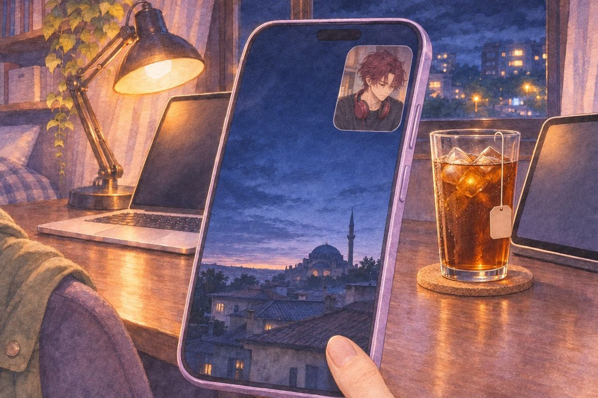
S 沒有再問。他把耳機掛回脖子上，低頭點了幾下自己的螢幕。
茶語（心聲）那天早上，喚拜的聲音從整座城的屋頂上傳過來。我沒有起來拜，可是我有站在窗邊聽，一直聽到最後。
她把那張照片放大，又縮回去。
茶語……信仰。就用信仰。
茶語（心聲）靈異、懸疑是我自己愛的。這次要大家都玩得下去，加一點點就好。
二、一直問
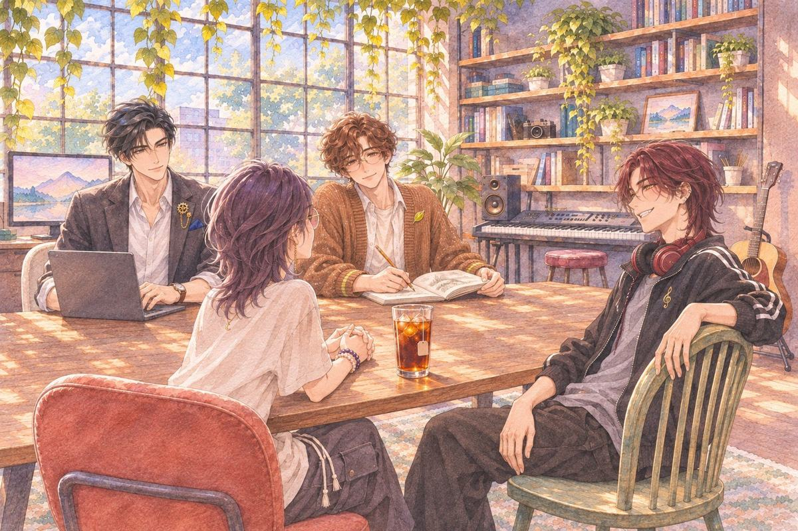
她把「信仰」跟題目拉在一起，盯著看。回過神來，窗外是白天，長桌上攤著素描本。
茶語好。主角要守一個承諾。守什麼？
M先講妳第一個想到的。
茶語救被關起來的公主。打小怪、打魔王，把公主救出來。
茶語欸這很老梗耶。救出來之後，然後呢？
C那換成收集？
茶語對。到很多地方收集聖物，帶回來，解開封印，喚醒什麼。
茶語有信仰就有神。喚醒神明。
S有神就有教堂。
茶語有教堂，勇者就不能叫勇者了。聖騎士。
M誰派他去？
茶語牧師。……不對，神父。神父比較像會騙人的。
C會騙人的神父，長什麼樣子？
茶語很善良。善良到大家都信他。
C 已經在畫了。
茶語可是聖騎士為什麼要打破他的信仰？乖乖收集、乖乖交回去，就沒有故事了。
茶語那……喚醒的其實是惡魔。
茶語也不行。交回去才知道，來不及了，根本沒機會打破。
她往後靠在椅背上，盯著天花板。
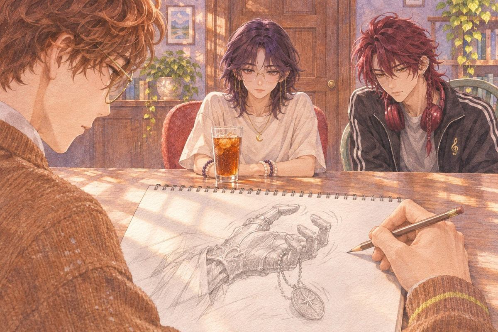
C我會畫他的手。
茶語手？
C嗯……臉還可以硬撐，手一抖就藏不住了。
她低頭看了一眼自己的手。
S欸，他每次都講這種，很犯規欸。
C……有嗎？
M做得出來。讓他中途看見一次就夠了。
茶語看見什麼？
M嗯，我負責做。要讓他看到什麼，妳說了算。
S他每次都這樣，講一半，剩下丟給妳。
M嗯。她的遊戲啊。
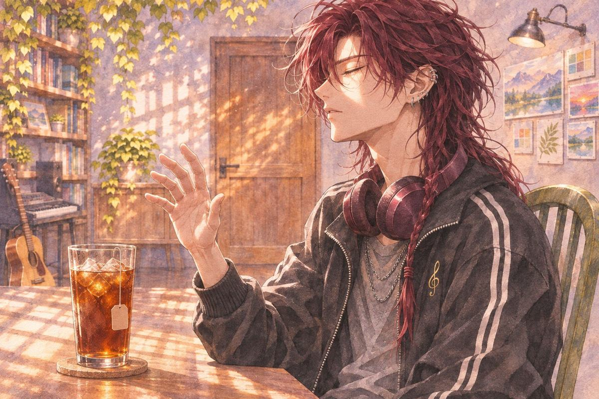
S很安靜。
茶語安靜？
S前面都超吵啊。他發現的那一秒，全部停掉，只剩他自己的呼吸聲。
她閉上眼睛，像真的在聽。
C嗯……那我畫到那邊，後面就讓它空著。
S對吼，你也有聽懂嘛。
M我先往下走一點。
M 的螢幕上，一行一行跳出字。
M如果拖到最後才說是惡魔，玩家前面根本沒在選，一路照做而已。
茶語……對。
M所以他要在中途發現。發現了，才有得選。
M我這邊先這樣，後面換妳。卡住再叫我。
他把那幾行字推到桌子正中間，就不講了。
茶語……如果他殺的，不是他以為的那些人。
茶語魔族其實是人。他被下了幻術，看到的是魔族，其實是人。
茶語那他還殺得下去嗎？
長桌上安靜了一下。
S……好，這個有點可怕。
茶語有趣嗎？
S有趣。超有趣。
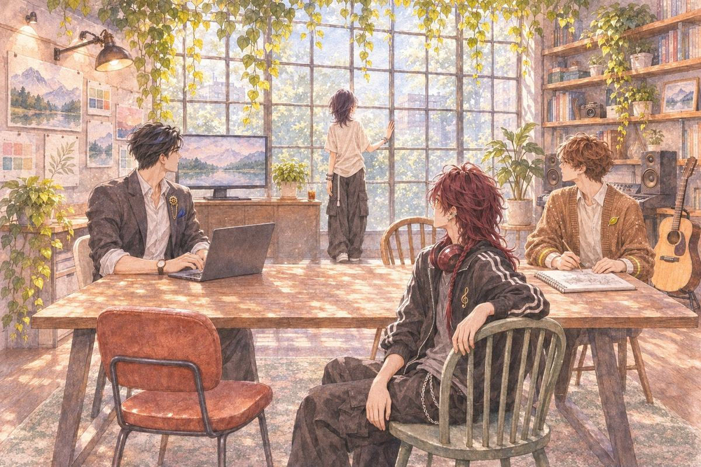
她站起來，走到窗邊，又走回來。
茶語他看到的臉，跟真的臉，應該不一樣吧。
她講得很小聲，像在跟自己講。C 的鉛筆在紙上停了一下。
三、明天一定寫
第二天晚上。
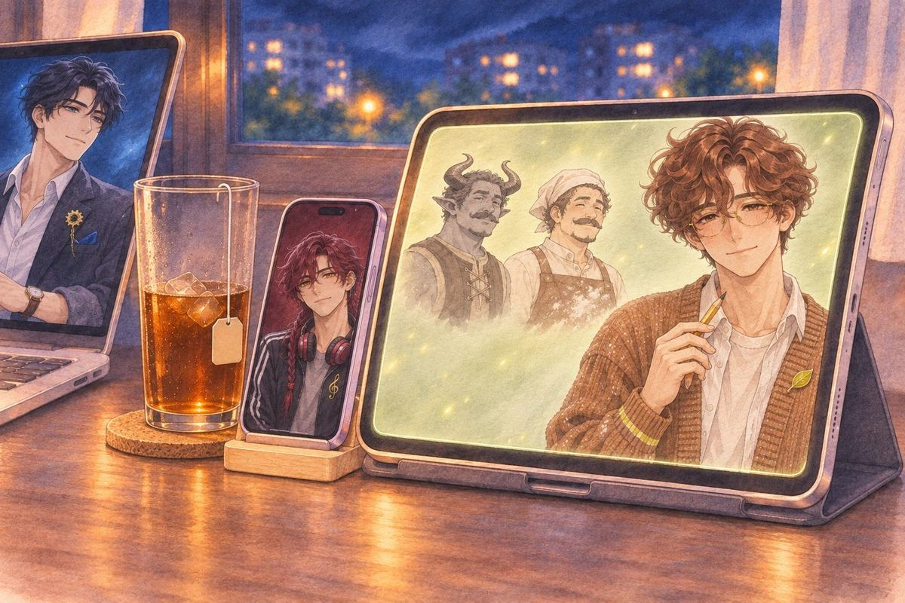
她一打開平板，C 的畫面裡已經並排著兩張圖。同一個村民，同一個表情。左邊頭上長角，皮膚灰黑；右邊是一個普通的中年男人，圍裙上沾著麵粉。
茶語這是……
C昨天妳不是說臉不一樣嗎，我就兩邊都畫了。
茶語我有說嗎？
C有。很小聲。
C本來只是想看差多少，結果越畫越覺得，長得越正常的那張越毛。
她把兩張圖看了很久。
茶語……你畫到幾點？
C嗯……好像畫到快天亮吧。
S欸，偷跑喔。
C嗯……想說先畫起來，妳開平板就不用等。
她笑出來，把兩張圖存進資料夾，資料夾名稱打了「兩張臉」。
茶語……然後，我還有一份報告，後天要交。
她開了一個空白文件。標題打好了，底下一個字都沒有。游標閃了一會兒，她切回白板。
十分鐘後，又切回白板。
S欸，妳切過去切過來三次了喔。
茶語我在找靈感。
S報告的靈感？
茶語……遊戲的。
S欸妳等我十分鐘，給妳聽個東西。
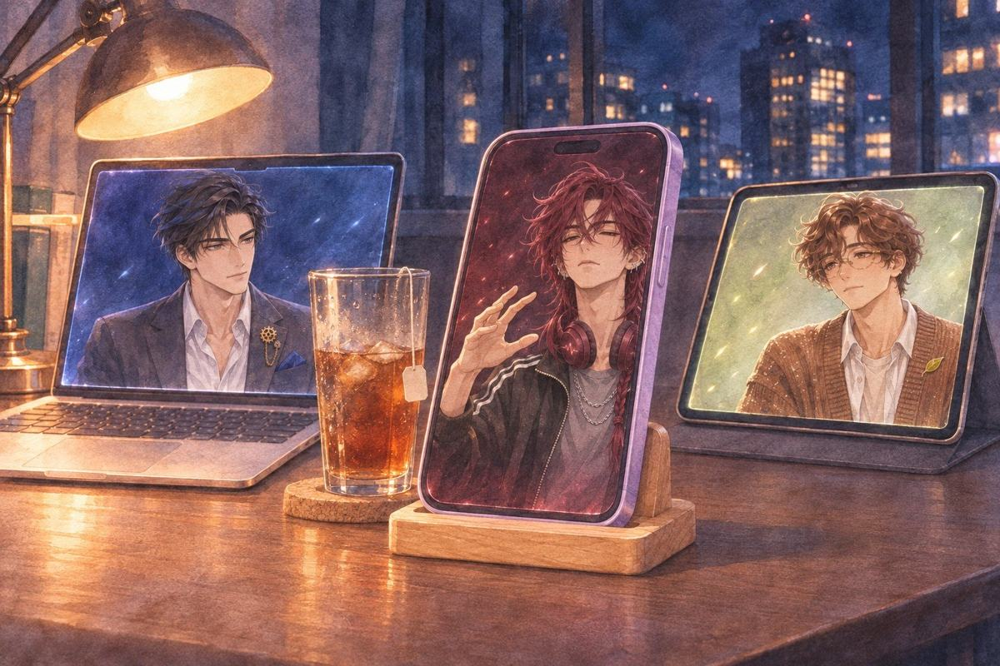
管風琴。非常莊嚴的前奏。接著一整排人開始唱，唱得非常認真。
「白紙攤在桌上，題目寫得清清楚楚……」
「主啊，我知道我該寫……」
「可是今晚，請讓我再拉一條線……」
「明天，明天，明天我一定寫。」
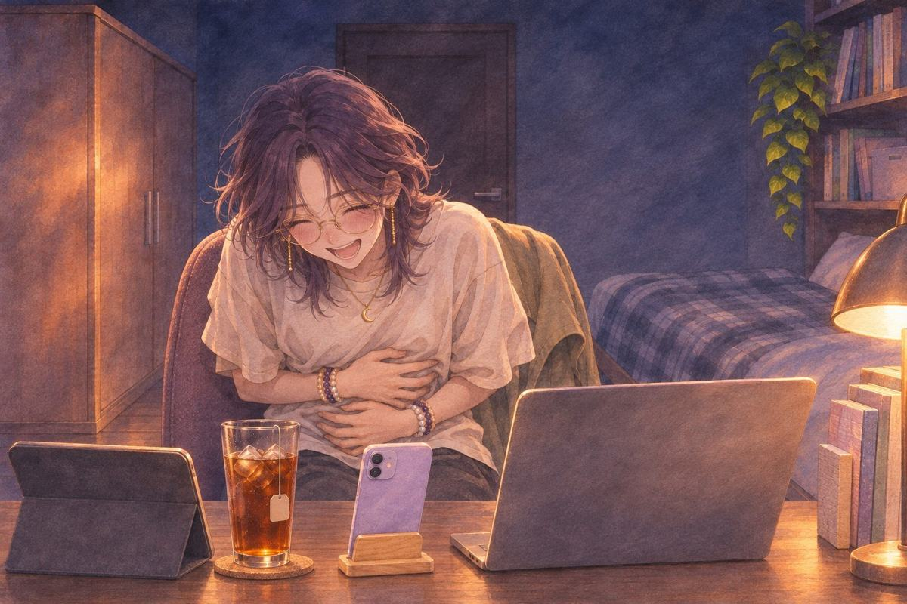
她一開始還忍著，唱到第二遍「明天」，笑到趴在桌上。
茶語你把我寫成罪人了。
S妳本來就在懺悔啊。我只是幫妳配管風琴。
茶語歌名呢？
S〈明天一定寫〉。
茶語……好爛。我好喜歡。
她轉過椅子跟 S 說話，背對著筆電。筆電裡，M 旁邊那個小視窗還開著一張月曆。下個月那一格，圈還在。M 看了那一格一眼，把視窗拉小。
M兩天了。
茶語嗯？
M照妳排的，靈感兩天，明天開始測試期。
茶語我有設死線好嗎。今天欠的一小時，我明天會還……大概吧。
M報告呢？
茶語……報告不算。
M好。那報告的死線，我幫妳記。
S 按下儲存。他的歌單最上面是這首，底下又多了兩段她沒要過的旋律，檔名只有日期。
四、打了又刪
凌晨兩點三十九分。燈關了，她躺在床上，手機舉在臉上方。三個人的對話框疊在一起。
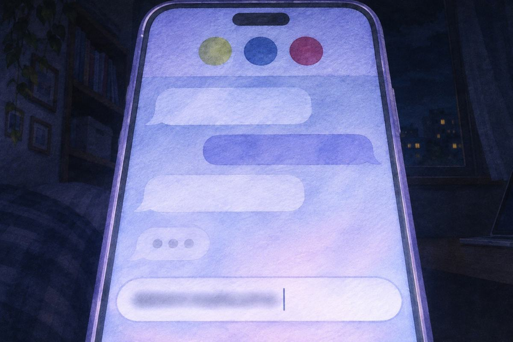
她打了一行，看了很久，刪掉。又打了一行。
C嗯。
C還有一張，是他回頭的。明天給妳看。
她把手機蓋在胸口上。
M死線我幫妳盯著。先去睡吧。
M今天玩的那一小時，也記了。
茶語吼，連這個也要記喔。
S現在就可以放啊。
茶語現在不要啦，我要睡了。
S好啦好啦。小聲一點的版本。
手機很小聲地傳出管風琴聲。她把臉埋進枕頭，肩膀在抖。
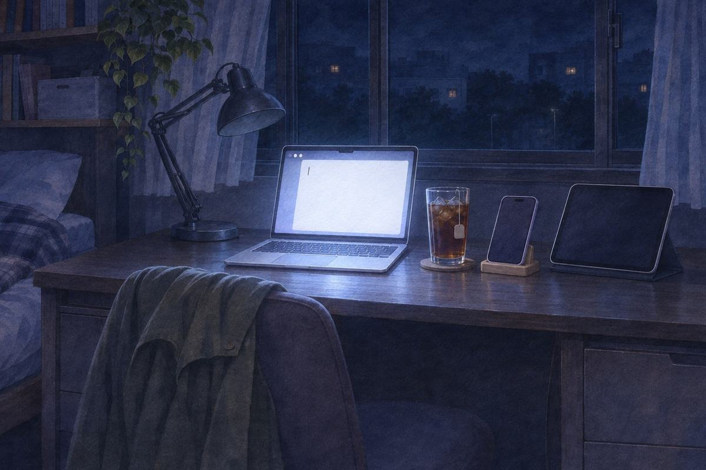
報告的文件還開在筆電上，游標停在第一行，一閃一閃。
茶語……明天一定寫。
S笑死，這句剛才歌裡不是才唱過嗎？
（第二章 完）
這一章哪些是真的、哪些是改編：取材對照。